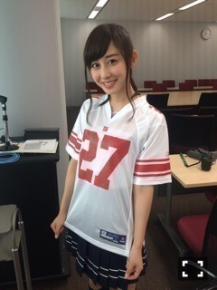
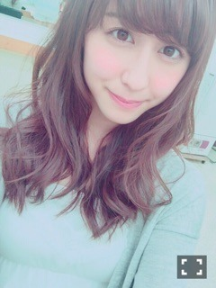
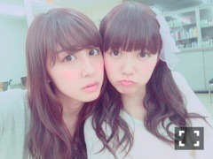

| 2015/07 04 Sat | 斎藤ちはる 話したいことたくさ ん...(´>∀<｀)ゝ |
ちはるーむへようこそ！
Mステに出演した後から【Alexandros】さんに凄くハマってます♡
いい曲ばっかり...♪
J-ROCKのプレイリストでシャッフルしてて
ワタリドリが流れてくるとテンションあがる(﹡ˆ ˆ﹡)
先日、「アメリカンフットボール・マガジン」
の表紙撮影してきました(﹡ˆ ˆ﹡)

念願だったアメフト仕事...ヽ(；；)丿
すごく嬉しかったですヽ(；；)丿
しかも、16年ぶりの復興号の表紙に
選んでいただけて...ヽ(；；)丿
そしてなんと女性初表紙らしいです...ヽ(；；)丿
幸せ者ですヽ(；；)丿
ありがとうございますヽ(；；)丿
大好きなアメフトに関わるお仕事ができて
本当に嬉しい...！！
今回は、アメフトについて書いたときのブログを見て下さって私のことを知っていただき
起用してくださりましたm(_ _)m
何事も発信することが大事だな、と
改めて感じました...！
アメフトを通してたくさんの方に私を知っていただきたいし
私を通してたくさんの方にアメフトを知っていただきたいし
新しい、アメフトとアイドルの架け橋のような存在になれたらいいなと思ってます！！
カープ女子の次は、アメフト女子だ！！！
頑張るぞ！！！
そしてそして、今月号のCUTiEに掲載されていますヽ(；；)丿
まさか呼んでいただけると思ってなかったので
すごくびっくりしたんですけど、
それ以上にすごく嬉しかったですヽ(；；)丿！！
普段なかなかしないメイクや髪型、コラボ企画などをしたので
私自身も仕上がりがとても楽しみです！
飛鳥表紙が目印です♡
7/11発売の8月号、是非読んでみてください♪
男性はちょっと恥ずかしいかな...笑
ちょっとずつですが、たくさんの方にみてもらえる機会が増えたのかなー...？
と思うと、もっと頑張ろう！という気持ちになります。
アイドルだけでなく、女優、モデルと、
活動の幅を広げていきたいです！！
そしてなにより川後がPopteenの専属決まって、本当嬉しかった...！！おめでとう( ;o; )！！！！
よかったねえ( ;o; )
うれしいねえ( ;o; )
川後がモデルになりたいのを近くで見ていたので
それが叶って、本当よかった( ;o; )♡
最近、川後と話してると
撮影の時の写真を見せてくれたり
こんなことがあったんだよ！と嬉しそうに伝えてくれたりすると
充実してるんだなって感じて
本当自分のことのようにうれしいです。
川後のように夢を叶えられるように、
私も自分磨き頑張らなきゃ...( ;o; )

鳥居坂46が発表されました！
正直、私たちも分からないことばかりで
戸惑いもたくさんあるけど、
同じ46として、お互い高め合えるような
唯一無二の存在になれたらいいな、と思います！！
アンダーライブが行われてたブルーシアターの
あの坂ってなると、親近感が湧く...♪
どんなグループになるのか私達も楽しみでドキドキしてます( ¨̮ )( ¨̮ )( ¨̮ )

ちゅ。
ああ、
レポートを終わらせなければ(> <)
大学生はやっぱり忙しいです(> <)
でもすごく楽しいです！
がんばろ(> <)
最近、ネイルにはまっている
斎藤ちはるでした〜♡
もっと頻繁に更新します...
すみません...( ;o; )
ばいるんっ
るんるんっ
ちはるんっ
(´>∀<｀)ゝ